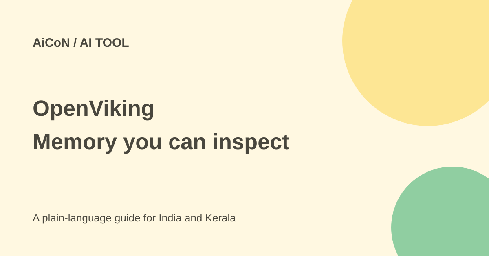

OpenViking: organise AI memory as a filesystem
OpenViking gives an AI application a browsable place for documents, memory and skills. The open-source server is free to obtain, but models and hosting can cost money.

What does OpenViking do?
Many AI applications retrieve isolated text chunks from a vector database. OpenViking puts context into a virtual filesystem using viking:// addresses. Resources hold documents and code. Memories can hold preferences and past experience. Skills hold instructions for particular tasks. These are application files, not an automatic guarantee that the application remembers everything correctly.
You can inspect directories with commands such as ls, tree, read and grep. Directory-scoped retrieval lets a developer search one project rather than the entire store. Generated summaries help an agent decide which original material it needs.
Three levels, in simple language
- L0 is a short abstract for a quick relevance check.
- L1 is an overview with the main information.
- L2 is the full source content, loaded when needed.
Committing a session can archive its conversation and extract readable Markdown memory. Developers can inspect, edit and merge that memory. The project reports better task results and lower token use in its own evaluations. Those measurements depend on the models, tasks and settings used. They are not a promise for your Malayalam documents or business workflow.
Free or paid?
The open-source main server uses AGPLv3 and needs no activation key. Paid model APIs, embedding work, computer resources and hosting remain separate. Local Ollama is one supported configuration option, but it still needs suitable hardware and models. Do not call the whole system cost-free just because its source is available.
The current README also describes Volcengine's hosted service with the first 50 files free, and commercial managed and self-managed editions. Hosting outside China is described as planned through BytePlus, not as an already-confirmed India region. Check the current plan and data location before using the hosted service.
Licences differ by component: the main project is AGPLv3, while the Rust CLI and most examples use Apache 2.0; a Hermes example retains MIT. Modified network-served AGPL software can carry source-sharing duties. Read the actual licence and get advice before integrating it into a commercial service.
How to try it safely
- Start with the current official README and setup guide. Choose a local test, not your production server.
- For server setup, prepare Python 3.10+, uv and compatible embedding and vision-language model access. A vision-language model can process both text and visual input.
- The README gives
uv tool install openviking --upgrade && openviking-server initas its manual setup entry point. - Choose the model provider and workspace deliberately. Keep API keys out of public repositories and shared chat.
- Check the server with
ov status. Import a small public resource and inspect its directories, summaries and retrieved evidence. - Test whether a saved preference can be retrieved in a later session. Background processing may mean it is not immediately available.
- Configure authentication before exposing the server beyond localhost. Review account isolation and resource access controls.
For India and Kerala
A college team could test memory over public project notes, or compare retrieval on English and Malayalam documents. Check whether generated summaries preserve names, dates and Malayalam spelling. Keep customer details, health records and private college records out of an initial experiment. Self-hosting does not stop data reaching an external model provider if that is what you configure.
What changed since the original post?
The 1 October post described the filesystem approach and AGPL main licence. The current README gives a fuller setup wizard, component-specific licences, memory plugins and commercial deployment choices. The free-first-50-files hosted offer is a separate service limit, not a limit on the open-source code.
Frequently asked questions
Is it a simple notes app?
No. It is mainly developer infrastructure for AI applications.
Does AGPL forbid business use?
No. Business use is possible, but licence duties still matter. Do not treat it as an unrestricted permissive licence.
Does it guarantee accurate memory?
No. Extracted summaries and memories can be wrong. Inspect the underlying files and test your own tasks.
Was the software tested for this guide?
No. This guide checks the current documentation and licence, not a running installation or benchmark.
Sources: Official repository · Main licence · Setup guide · Project site. Checked 7 October 2026.